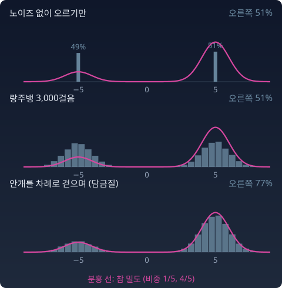

랑주뱅: 고정된 지형 위에서 스코어로 걷기
레이더가 손에 있으면 가장 먼저 떠오르는 걸음은 바늘을 따라 오르는 것이다. 그런데 참가자 모두가 바늘만 따라 오르면 모두 가까운 봉우리 꼭대기 한 점에 선다. 생성 모델이 할 일은 그게 아니다. 같은 버튼을 다시 누르면 다른 고양이가 나와야 하고, 여러 번 누르면 여러 모습의 고양이가 세상에 있는 비율대로 고르게 나와야 한다. 꼭대기 일곱 점만 내놓는 모델은 쓸모가 없다. 레이더를 따라가되 지형의 높낮이대로 흩어지게 하려면 무엇을 더해야 할까?
비틀거리며 오르기
답은 일부러 비틀거리게 하는 것이다. 레이더 방향으로 한 걸음 가고, 그때마다 작은 무작위 걸음을 섞는다. 고정된 지형 p 하나 위에서 이렇게 걷는 것을 랑주뱅 동역학이라고 부른다. 이름은 물리학자 폴 랑주뱅(Paul Langevin)이 1908년 물속 작은 입자의 브라운 운동을 적은 식에서 왔다.
오래 걸으면 점들이 지형의 높낮이대로 흩어진다. 시간이 지나도 점들의 분포가 더는 변하지 않는 상태의 분포를 정상분포(시간이 지나도 변하지 않는 분포, 정규분포와 다름)라고 부르는데, 이 식의 정상분포가 정확히 p다. 여기서 노이즈를 끄면 그냥 경사 상승이라, 모두 가까운 봉우리 꼭대기에 멈춘다. 샘플링이 아니라 봉우리 찾기다. 노이즈 앞의 √2가 왜 하필 그 값이어야 하는지는 아래 문제 7에서 따져 본다.

실제 사례: 봉우리 비율을 못 맞춘 랑주뱅
랑주뱅은 정상분포가 p라는 것까지 보장한다. 그러나 「오래」가 얼마나 오래인지는 말해 주지 않는다. 송(Yang Song)과 에르몬(Stefano Ermon)은 2019년 논문 「Generative Modeling by Estimating Gradients of the Data Distribution」에서 스코어만으로 이미지를 만드는 길을 찾다가 두 벽에 부딪혔다. 하나는 매니폴드 가설 자체였다. 데이터가 얇은 면에 붙어 있으면 그 면 밖의 큰 공간에서는 스코어를 배울 근거가 거의 없다. 다른 하나는 랑주뱅이었다. 두 사람은 비중이 1/5과 4/5인 두 봉우리가 멀리 떨어진 혼합에서 정확한 스코어로 랑주뱅을 돌렸는데, 두 봉우리의 비율이 제대로 나오지 않았다.
까닭은 스코어의 식에 있다. 한 봉우리 근처에서는 다른 봉우리의 몫이 거의 0이라, 스코어는 그 봉우리 하나의 기울기와 같다. 혼합 비중은 로그 밀도에 더해지는 상수(log 비중)로만 남는데, 기울기를 내는 순간 그 상수가 사라진다. 레이더는 자기 봉우리가 큰 봉우리인지 작은 봉우리인지 모른다. 그리고 걷는 점은 자기가 떨어진 봉우리 안에서만 맴돌 뿐, 그 사이의 벌판을 건너는 일은 아주 드물다. 그래서 처음에 어느 쪽에 떨어졌는지가 끝까지 남는다. 위 그림의 가운데 줄이 그것이다.
두 사람이 찾은 길은 안개였다. 데이터에 여러 수준의 노이즈를 섞어 수준마다 스코어를 배우고, 안개가 짙은 지형에서 몇 걸음, 조금 걷힌 지형에서 몇 걸음 하는 식으로 차례로 걷는다. 이것을 담금질 랑주뱅(annealed Langevin dynamics)이라고 부른다. 짙은 안개 속에서는 두 봉우리가 한 언덕으로 합쳐져 있어서, 점들이 언덕의 모양대로, 곧 비중대로 나뉜 다음에 안개가 걷힌다.
파이썬
그림의 세 줄을 만든 계산이다. 봉우리 둘(−5와 +5, 폭 1, 비중 1/5과 4/5)을 쓰고, 스코어는 혼합의 정확한 식으로 계산한다.
import numpy as np
w, mu = np.array([0.2, 0.8]), np.array([-5.0, 5.0]) # 봉우리 둘: 비중 1/5, 4/5, 폭 1
def score(x, var=1.0): # 혼합의 스코어 (봉우리 분산 var)
d = mu[None] - x[:, None]
lg = np.log(w) - d**2 / (2 * var)
g = np.exp(lg - lg.max(1, keepdims=True)); g /= g.sum(1, keepdims=True)
return (g * d).sum(1) / var
r = np.random.default_rng(0)
start = r.uniform(-8, 8, 20000) # 평야 아무 데서나 출발
x = start.copy() # (1) 노이즈 없이 오르기만
for _ in range(3000): x = x + 0.05 * score(x)
print("오르기만 오른쪽 비율", np.mean(x > 0).round(3), " 봉우리 안 퍼짐", x[x > 0].std().round(3))
x = start.copy() # (2) 랑주뱅: 고정 지형, 3000걸음
for _ in range(3000): x = x + 0.05 * score(x) + np.sqrt(2 * 0.05) * r.normal(size=x.size)
print("랑주뱅 오른쪽 비율", np.mean(x > 0).round(3), " 봉우리 안 퍼짐", x[x > 0].std().round(3))
x = start.copy() # (3) 안개를 차례로 걷으며: 10단계 × 100걸음
for s in np.geomspace(10, 0.1, 10):
v = 1 + s**2; a = 0.05 * v
for _ in range(100): x = x + a * score(x, v) + np.sqrt(2 * a) * r.normal(size=x.size)
print("담금질 랑주뱅 오른쪽 비율", np.mean(x > 0).round(3), " 봉우리 안 퍼짐", x[x > 0].std().round(3))
# 오르기만 오른쪽 비율 0.511 봉우리 안 퍼짐 0.0
# 랑주뱅 오른쪽 비율 0.514 봉우리 안 퍼짐 1.005
# 담금질 랑주뱅 오른쪽 비율 0.772 봉우리 안 퍼짐 1.019
오르기만 하면 봉우리 안 퍼짐이 0이다. 모두 꼭대기 한 점에 섰다. 랑주뱅은 퍼짐(참값 1)은 맞추지만 비율은 출발 때의 비율(평야의 절반씩)에 머문다. 안개를 차례로 걷은 쪽만 비율이 참값 0.8에 다가간다.
수확
“고정된 지형 위에서 스코어를 따라 오르기만 하면 꼭대기를 찾고, 알맞은 크기로 비틀거리면 지형대로 흩어진다. 봉우리가 멀리 떨어져 있으면 안개를 차례로 걷어 가며 걸어야 비율까지 맞는다.”
문제 7. 비틀거림의 크기
1차원 표준정규 p = N(0, 1) 위의 랑주뱅 dx = −x dt + √2 dW를 생각한다. (가) 노이즈 계수를 √2 대신 1로 하거나 2로 하면, 오래 돌린 뒤 점들의 분산은 얼마인가? (나) 노이즈 계수는 √2로 두고 표류만 −x에서 −x/4로 바꾸면 점들은 어느 분포에 머무는가? 그 분포의 스코어는 무엇인가?
함께 풀기

노이즈가 있긴 하니까 계수가 1이든 2든 결국 N(0, 1)로 가지 않을까? 노이즈 크기는 수렴 속도만 바꿀 것 같아.

돌려 봤는데 아니야. √2일 때 분산 1.005인데, 계수 1이면 0.503, 2면 2.018이야.
속도만이 아니네요. 정상분포 자체가 바뀌어요.

분포가 시간에 따라 안 변하려면, 표류가 안으로 끄는 힘과 노이즈가 밖으로 퍼뜨리는 힘이 맞아야 해요. 포커-플랑크 방정식(점들의 분포가 시간에 따라 어떻게 흐르는지 적은 식)이 그 균형을 써요. dx = −a x dt + b dW의 정상분포는 N(0, b²/2a)예요.

a = 1, b = √2면 분산 1이고 b = 1이면 ½, b = 2면 2예요. √2는 장식이 아니라 p를 정상분포로 만드는 유일한 값이에요. 노이즈가 있다는 것만으로 목표 분포가 정해지지는 않아요. 계수까지 맞아야 해요.
(나)도 그 식으로 바로 되겠네요. 서연 학생이 해 봐요.
a = ¼, b = √2면 2/(2 × ¼) = 4라서 N(0, 4)예요. 그 분포의 스코어는 −x/4이고요. …표류랑 똑같네요.

그러니까 랑주뱅 식의 표류 자리에 스코어를 넣는 건 우연이 아니구나. 노이즈 계수를 √2로 맞춰 두면, 표류에 어느 분포의 스코어를 넣든 그 분포가 정상분포가 되는 거야.
미분방정식 수업에서 평형점은 들어오는 양과 나가는 양이 같은 곳이었어요. 여기서는 점 하나가 아니라 분포 전체가 그 평형이네요.
문제 8. 보폭이 있는 랑주뱅
컴퓨터에서는 랑주뱅을 짧은 시간 간격 h로 끊어 x ← x + h ∇log p(x) + √(2h) z 로 돌린다(z는 걸음마다 새로 뽑는 표준정규 난수). 이 h는 ML에서 학습률이 앉는 자리의 숫자다. p = N(0, 1)일 때 (가) h = 0.1로 오래 돌리면 점들의 분산은 얼마인가? (나) h = 1이면? (다) 이 어긋남을 줄이려면 어떻게 해야 하는가?
함께 풀기
앞 문제에서 계수가 √2면 정확히 N(0, 1)이라고 했으니까 분산 1이죠. h는 학습률처럼 빨리 가느냐 천천히 가느냐만 정할 거고요.
돌려서 확인해 봐요.

h = 0.1로 돌렸더니 1.052예요. 0.05만큼 커요. 표본이 모자라서 그런가?
한 걸음의 식을 정리해 봐요. N(0, 1)이면 스코어가 −x예요.
x′ = (1 − h)x + √(2h) z예요. 분산 v가 걸음마다 안 변하려면 v = (1 − h)²v + 2h라서 v = 2h / (1 − (1 − h)²) = 1 / (1 − h/2)예요. h = 0.1이면 1.053, h = 1이면 2예요.

h = 1이면 분산이 두 배요? 표본 탓이 아니었네요. 앞 문제의 √2는 시간을 한없이 잘게 쪼갰을 때의 이야기고, 실제로 끊어 걸으면 보폭만큼 넓게 퍼지는 거군요.
(다)는 h를 0으로 보내면 1 / (1 − h/2)가 1로 가니까 보폭을 줄이면 돼요. 대신 같은 거리를 가려면 걸음 수가 늘어요.
그래요. 실제 샘플러도 보폭과 걸음 수를 맞바꿔요. 학습률을 크게 잡으면 빨리 내려가지만 바닥 근처에서 출렁이는 것과 같은 이야기예요.
과제 마감 직전에 큰 보폭으로 코드를 고치면 빨리 끝나는 대신 버그가 남는 거랑 같네요.